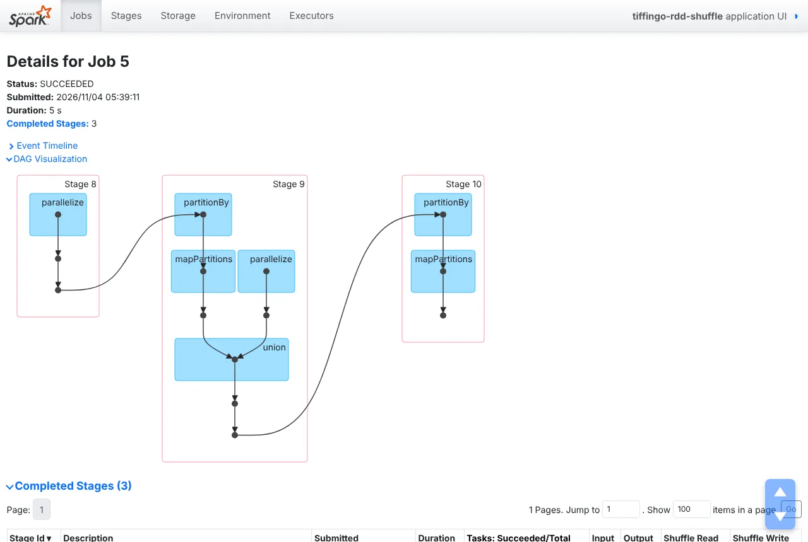

The shuffle is where most Spark jobs spend their time. This lesson measures it: every common narrow and wide operation runs on 2,000,000 TiffinGo order amounts on our cluster, and the Spark UI reports how much data each one moved. All numbers and screenshots are real (Spark 4.3.0).
Module 2 · RDDs: Spark’s foundation⏱ 36 minIntermediateSpark 4.3.0 clusterShuffle bytes measuredJoin with no shuffleRuns in your browser (Python)8 practice problems
1 The story
“Two lines, same answer, twice the time”
Before you start: Lesson 2.3 (stages and the DAG). Pair RDDs (key, value) are introduced fully in 2.5; here we only need (customer_id, amount).
Kabir wrote TiffinGo’s revenue-per-customer job with groupByKey().mapValues(sum). Riya wrote the same thing with reduceByKey(add). Both print 2,000 customers with identical totals. Kabir’s takes twice as long and his team lead keeps saying one word in the review: “shuffle”.
Kabir
Sir, both versions group by customer. Why is mine slower?
Arjun Sir
Grouping needs every order of a customer in one place, but those orders sit in different partitions on different executors. Moving them is the shuffle: write to local disk, send over the network, read back. reduceByKey adds up inside each partition first, so far less data moves. groupByKey sends the values as they are.
Riya
So which operations shuffle?
Arjun Sir
The wide ones. Today we run each kind on 2,000,000 TiffinGo order amounts on our cluster and read the shuffle bytes from the Spark UI: groupByKey vs reduceByKey, repartition vs coalesce, and a join that needs no shuffle at all. All numbers are real (Spark 4.3.0, two executors).
2 Definition
Narrow and wide dependencies, and the shuffle
Formal definition (write this in exams)
Transformations create dependencies between RDDs. A narrow dependency exists when each partition of the parent is used by at most one partition of the child, so the work can be pipelined within one task and stage. A wide (shuffle) dependency exists when a child partition may need data from many parent partitions; Spark then performs a shuffle: map tasks partition their output by key (by default with a hash partitioner) and write it to local disk, and reduce tasks in the next stage fetch their parts over the network. Shuffles are the main cost of most Spark jobs. Operations such as reduceByKey and aggregateByKey combine values on the map side before shuffling; groupByKey ships the values. RDDs that share the same partitioner can be joined without another shuffle, and transformations such as mapValues preserve the partitioner.
In simple words
Some steps can be done on each piece of data where it is (narrow). Others need data from all pieces (wide), so Spark moves data between machines: the shuffle. Shuffles are slow, so send less data: combine first, avoid unneeded repartitioning, and reuse the same partitioning.
Words you’ll meet in this lesson
NarrowChild partition needs one parent partition. No data moves.
WideChild partition needs many parent partitions. Shuffle.
Shuffle writeMap tasks write partitioned output to local disk.
Shuffle readReduce tasks fetch their part from every map task.
Map-side combineCombining values per key before the shuffle (reduceByKey).
PartitionerRule mapping a key to a partition (hash, range).
Co-partitionedTwo RDDs with the same partitioner and number of partitions.
coalesceMerge partitions without a shuffle (only to reduce the number).
Common operations by dependency
Narrow (no shuffle)
Wide (shuffle)
Depends
map, flatMap, filter
groupByKey, reduceByKey
join: narrow if co-partitioned
mapValues, flatMapValues
distinct, sortByKey, sortBy
coalesce(n, shuffle=True) = repartition
union, sample, mapPartitions
repartition, partitionBy
cogroup: like join
coalesce(n) (fewer partitions)
aggregateByKey, combineByKey
—
Narrow, wide and shuffle at three levels
Pick your level. New to this? Start at Beginner and climb.
Beginner Sorting post in a post office
Narrow: each clerk stamps the letters in their own tray. No one moves.
Wide: letters must be grouped by city, so every clerk sends some letters to every other clerk. That exchange is the shuffle.
Counting letters per city in your own tray first, and sending only the counts, is much faster (reduceByKey).
Intermediate The rules
Narrow dependency: each child partition depends on at most one partition of each parent (map, filter, flatMap, mapValues, union, coalesce).
Wide dependency: a child partition depends on many parent partitions (groupByKey, reduceByKey, distinct, join, sortByKey, repartition). It starts a new stage.
A shuffle writes map output to local disk, then reducers fetch it over the network: cost in disk, network, serialisation and memory.
Advanced What the lab showed
groupByKey wrote 355.6 KiB of shuffle data and took 5.0 s; reduceByKey wrote 106.7 KiB and took 2.3 s, with identical results.
repartition(2) shuffled all 2,000,000 pairs (11.5 MiB); coalesce(2) merged partitions without a shuffle.
Two RDDs partitioned the same way (8 partitions, same hash) were joined with no new shuffle; mapValues kept the partitioner, map lost it.
Exam tip: “Narrow vs wide transformations?” Narrow: each output partition depends on one input partition (map, filter); no shuffle, pipelined in one stage. Wide: output partitions depend on many input partitions (groupByKey, reduceByKey, join, repartition); requires a shuffle and a new stage. Prefer reduceByKey over groupByKey because it combines values before shuffling.
3 Types and ways to use it
Choosing operations to shuffle less
Instead of
Use
Why
Lab
groupByKey().mapValues(sum)
reduceByKey(add)
Combines per partition before shuffling
355.6 → 106.7 KiB
groupByKey() for averages
aggregateByKey((0, 0), …)
Ships (sum, count), not all values
Lesson 2.5
repartition(n) to reduce partitions
coalesce(n)
Merges locally, no shuffle
11.5 MiB → 0
Joining two RDDs repeatedly
partitionBy(n) both once + cache
Later joins need no shuffle
join with 0 new shuffle
map on a partitioned pair RDD
mapValues
Keeps the partitioner
kept: True vs False
Shuffling a small table to join a big one
Broadcast the small one
Only the small side moves
Lessons 3.2, 8.2
coalesce avoids a shuffle by merging neighbouring partitions, which can leave them unbalanced and reduces parallelism for everything before it in the same stage. Use it to write fewer files at the end of a job; use repartition when you need evenly sized partitions or more of them.
4 Step by step
Measuring shuffles on the cluster
All outputs are real: Spark 4.3.0 standalone cluster, two executors with 2 cores each. Data: 2,000,000 generated (customer_id, amount) pairs for 2,000 TiffinGo customers, in 8 partitions. Shuffle sizes come from the history server’s REST API (job descriptions set with setJobDescription).
Step 1 · Narrow: no data moves
pairs = sc.parallelize(range(2_000_000), 8).map(lambda i: (i % 2000, (i * 7919) % 900 + 60))
n = pairs.filter(lambda kv: kv[1] > 500).map(lambda kv: kv[1] * 1.05).count()
Generate, filter and map ran as one stage of 8 tasks, one per partition, with 0 bytes of shuffle. Each task read its partition, filtered it and mapped it in a single pass. Narrow steps are the cheap ones; most of the 5.4 s here is starting Python workers and generating the data.
Real screenshot: groupByKey on the cluster. Stage 1 writes 355.6 KiB of shuffle data; stage 2 (partitionBy, mapPartitions) reads it. 8 tasks each.Two stages: 8 map tasks wrote the pairs to shuffle files partitioned by customer, 8 reduce tasks fetched them and summed. 355.6 KiB crossed the shuffle. PySpark already packs values into batches, so the record count (448) counts batches, not pairs; the bytes are the number to watch.
Step 3 · reduceByKey: combine first
from operator import add
r = pairs.reduceByKey(add).collect()
sorted(g) == sorted(r)
Same shape (2 stages, 16 tasks), same 2,000 totals, but only 106.7 KiB written: about a third. Each map task first added up the amounts per customer inside its partition (map-side combine), so it shuffled one partial sum per customer instead of every amount. The job took 2.3 s instead of 5.0 s. With millions of values per key, the gap grows enormously.
Both ended with 2 partitions. repartition(2) is a full shuffle: 11.5 MiB, every pair written and read again, 2 stages. coalesce(2) just let each of 2 tasks read 4 of the old partitions: 1 stage, 0 bytes. To reduce partitions, coalesce; to rebalance or increase them, repartition.
Step 5 · A join that shuffles both sides
totals = pairs.reduceByKey(add) # 8 partitions
names = sc.parallelize([(c, f"cust{c}") for c in range(2000)], 4) # 4 partitions
totals.join(names).count()
join A: 2000 | partitioner of totals: True
job 5 stages 3 run/3 total tasks 32 shuffle write 147.7 KiB 640 rec | 6 join without a shared partitioner

Real screenshot: the join without a shared partitioner. PySpark implements join as union + group: both inputs are shuffled again (stages 9 and 10).Three stages and 32 tasks: the reduce for totals, then a shuffle of both inputs so that matching customer ids meet. In PySpark, join is built from union + group by key (visible in the DAG). totals had a partitioner, but names did not and had a different number of partitions, so both sides moved.
Step 6 · Co-partition once, join without a shuffle
join B: 2000
job 6 stages 2 run/2 total tasks 16 shuffle write 106.7 KiB 448 rec | 7 join with a shared partitioner
job 7 stages 2 run/2 total tasks 12 shuffle write 18.5 KiB 128 rec | 7 join with a shared partitioner
job 8 stages 1 run/3 total tasks 8 shuffle write 0.0 KiB 0 rec | 7b join of co-partitioned RDDs
Real screenshot: the co-partitioned join. The two partitionBy stages are skipped (already done and cached: green dots) and the join runs inside one stage with no new shuffle.Jobs 6 and 7 partitioned and cached both sides with the same hash partitioner and 8 partitions: those shuffles are paid once. The join (job 8) then ran in one stage with two stages skipped and 0 bytes of new shuffle: partition k of one side only needs partition k of the other. Worth it when the same RDDs are joined repeatedly.
Step 7 · Keep the partitioner: mapValues, not map
part_totals.mapValues(lambda v: v * 2).partitioner is not None
part_totals.map(lambda kv: (kv[0], kv[1] * 2)).partitioner is not None
map could change the keys, so Spark must forget the partitioner; a later join or reduce would shuffle again. mapValues guarantees keys stay the same, so the partitioner is kept. The same applies to flatMapValues. A one-word change that can save a whole shuffle.
5 See it happen
Where data moves
Left: real outputs. Right: the dependencies between partitions.
Three live scenarios follow: a hot key, one output file, and repeated joins.
Real-time scenario 1
groupByKey on a hot key
Why reviewers flag groupByKey. (Typical; shuffle sizes from our lab.)
Map-side combine 5 steps
Animated example
Executor dies.
One giant key.
Combine first.
Smaller shuffle.
Clean the data.
Real-time scenario 2
One output file at any cost
A common request with a hidden shuffle. (Typical; costs from our lab.)
coalesce vs repartition 5 steps
Animated example
One file please.
Everything through one task.
coalesce has a catch.
A few files.
Think in sizes.
Real-time scenario 3 · advanced
Joining the same data again and again
How co-partitioning saves repeated shuffles. (Typical; behaviour from our lab.)
Co-partitioning 5 steps
Animated example
Repeated joins.
Partition once.
Match the other side.
No shuffle.
Do not lose it.
6 Real-world use
Shuffles at work
1. Code reviews
groupByKey followed by an aggregation is one of the first things reviewers replace with reduceByKey or aggregateByKey.
groupByKey→review→reduceByKey
2. Output file sizes
coalesce at the end of jobs keeps file counts sensible without a shuffle.
Many parts→coalesce→Fewer files
3. Iterative joins
Graph algorithms and iterative pipelines co-partition and cache the static side to avoid shuffling it each round.
Static side→partitionBy→Cheap joins
4. Tuning with shuffle metrics
Shuffle read and write in the Stages tab show which step moves the most data and where to optimise.
Stages tab→shuffle bytes→Fix
5. Cloud cost
Shuffle traffic uses disks and network that cloud providers bill for; smaller shuffles mean cheaper jobs.
Shuffle→smaller→Lower bill
Examples are simplified.
7 Run the code
Run the code: simulate a shuffle
Two partitions of (customer, amount) pairs. Count how many records each approach sends across the network. Press Run, then try the challenges.
# How much moves in a shuffle? groupByKey vs reduceByKey, simulated
partitions = [
[("c1", 530), ("c2", 210), ("c1", 480), ("c3", 990)],
[("c2", 120), ("c1", 340), ("c3", 60), ("c3", 300)],
]
# groupByKey: every (key, value) crosses the network
moved_group = sum(len(p) for p in partitions)
# reduceByKey: combine inside each partition first, then move one value per key
combined = []
for p in partitions:
acc = {}
for k, v in p:
acc[k] = acc.get(k, 0) + v
combined.append(acc)
moved_reduce = sum(len(acc) for acc in combined)
print("records moved by groupByKey :", moved_group)
print("records moved by reduceByKey:", moved_reduce)
print("partials:", combined)
records moved by groupByKey : 8
records moved by reduceByKey: 6
partials: [{'c1': 1010, 'c2': 210, 'c3': 990}, {'c2': 120, 'c1': 340, 'c3': 360}]
moved_group = sum(len(p) for p in partitions)groupByKey ships every pair: here 8 records.
moved_reduce = sum(len(acc) for acc in combined)reduceByKey ships one partial sum per key per partition: here 6. With many values per key the saving is huge.
Run on your PC: check partitioners and shuffles
In the pyspark shell or on the Docker cluster. Outputs are real (Spark 4.3.0).
1 · Does it keep the partitioner?
p = pairs.reduceByKey(add, 8)
p.mapValues(lambda v: v * 2).partitioner is not None, p.map(lambda kv: (kv[0], kv[1] * 2)).partitioner is not None
Sum of shuffleWriteBytes over the stages of each job.
8 Line by line
Map-side combine, step by step
Follow reduceByKey on one partition before the shuffle.
Worked examples: real problems, solved and traced in memory
Three shuffle decisions from real jobs.
Example 1BeginnerPerformance · aggregation
Rewrite a groupByKey
Problem statement
Revenue per customer was computed with groupByKey. Rewrite it.
Input
pairs of (customer_id, amount)
Expected output
before: pairs.groupByKey().mapValues(sum)
after : pairs.reduceByKey(add)
lab : 355.6 KiB -> 106.7 KiB shuffled, 5.0 s -> 2.3 s
Approach
Spot groupByKey + sum.
Replace with reduceByKey.
Compare results.
Solution: run it live
What happens in memory, step by step
Recorded from a real Python run: press Next to execute one line at a time. Watch variables change in each frame, and lists and dictionaries (numbered #1, #2 …) fill up as objects.
Example 2IntermediateData engineering · files
Fewer output files
Problem statement
A job writes 400 small files. Reduce to about 20 without a shuffle.
Input
400 partitions
Expected output
coalesce(20): each output task merges 20 partitions, no shuffle
Approach
coalesce(20) before writing.
Check file sizes.
Use repartition only if skewed.
Solution: run it live
What happens in memory, step by step
Recorded from a real Python run: press Next to execute one line at a time. Watch variables change in each frame, and lists and dictionaries (numbered #1, #2 …) fill up as objects.
Example 3AdvancedArchitecture · joins
Co-partition for repeated joins
Problem statement
Plan an hourly join of new orders with 10 million customers.
Input
customers static, orders hourly
Expected output
customers = customers.partitionBy(200).cache()
hourly = orders.reduceByKey(add, 200)
joined = hourly.join(customers) # customers not shuffled again
Approach
partitionBy(n) customers once, cache.
reduceByKey(…, n) orders with the same n.
Join each hour without shuffling customers.
Solution: run it live
What happens in memory, step by step
Recorded from a real Python run: press Next to execute one line at a time. Watch variables change in each frame, and lists and dictionaries (numbered #1, #2 …) fill up as objects.
9 Quiz and revision
Check yourself
Quick revision
Lesson 2.4 in one screen
Narrow: child partition ← one parent partition (map, filter, mapValues, union, coalesce). One stage.
Wide: child ← many parents (groupByKey, reduceByKey, distinct, join, sortBy, repartition). Shuffle + new stage.
Shuffle = write map output to local disk + fetch over the network: the main cost of jobs.
Lab: groupByKey 355.6 KiB / 5.0 s vs reduceByKey 106.7 KiB / 2.3 s (map-side combine).
Co-partitioned RDDs (same partitioner, same n) join with no new shuffle; partition once, cache, reuse.
mapValues keeps the partitioner; map loses it.
Interview and viva questions
Is groupByKey ever right?
Yes, when you really need all values of a key together (for example to sort a customer’s orders by time). If the next step is an aggregation, use reduceByKey, aggregateByKey or combineByKey instead.
Where are shuffle files stored?
On the local disks of the executors that ran the map tasks (spark.local.dir), not in HDFS. That is why losing an executor can force map tasks to rerun (Lesson 1.3).
What decides the number of reduce partitions?
For RDDs: the numPartitions argument of the operation, otherwise the parent’s partitioner or spark.default.parallelism. For DataFrames: spark.sql.shuffle.partitions, adjusted by AQE.
Does coalesce ever shuffle?
Only with coalesce(n, shuffle=True), which is what repartition does. Without it, coalesce can only reduce the number of partitions.
Do DataFrames have the same rules?
Yes. Exchange operators in a DataFrame plan are shuffles; Catalyst adds partial aggregation automatically, which is why DataFrame groupBy behaves like reduceByKey (Lesson 1.4).
Practice problems
Programs about dependencies, partitioning and shuffle sizes.
wide = {"groupByKey", "reduceByKey", "distinct", "join", "sortBy", "repartition"}
for op in ["map", "reduceByKey", "filter", "join", "coalesce"]:
print(op, "wide" if op in wide else "narrow")
from collections import Counter
p0 = Counter(); p1 = Counter()
for k, v in [("c1", 5), ("c1", 3), ("c2", 1)]: p0[k] += v
for k, v in [("c1", 2), ("c2", 4)]: p1[k] += v
print(dict(p0), dict(p1), dict(p0 + p1))
How it works: What reduceByKey does before and after the shuffle.
P6Medium
Files after coalesce
Partitions merged per output task.
Input
400 → 20
Expected output
20
Show solution and explanation
print(400 // 20)
20
How it works: Each output task reads 20 old partitions.
P7Business problem
Network bill
Monthly shuffle saved by reduceByKey.
Input
2 TB/day with groupByKey, 70% less
Expected output
42.0 TB per month not moved
Show solution and explanation
print(2 * 0.7 * 30, "TB per month not moved")
42.0 TB per month not moved
How it works: Less disk and network, faster jobs.
P8Business problem
Repeated join cost
Customer data shuffled per day without co-partitioning.
Input
5 GB × 24 joins
Expected output
120 GB/day vs 5 GB once
Show solution and explanation
print(5 * 24, "GB/day vs 5 GB once")
120 GB/day vs 5 GB once
How it works: Partition once, reuse all day.
Real-world scenario questions (asked in company interviews)
Shuffle questions separate beginners from experienced Spark engineers.
Any company · SparkFresher
Narrow vs wide
Explain narrow and wide transformations with examples.
The interviewer is checking: do you know which ones shuffle?
Show a strong answer
Narrow transformations like map and filter compute each output partition from one input partition, so they run in the same stage without moving data. Wide transformations like groupByKey, reduceByKey and join need data from many partitions, so Spark shuffles data across the network and starts a new stage.
Avoid: Calling reduceByKey narrow.
Data engineeringMid-level
groupByKey vs reduceByKey
Why is reduceByKey preferred?
The interviewer is checking: do you know map-side combine?
Show a strong answer
reduceByKey combines values per key in each partition before shuffling.
groupByKey ships every value and builds full lists in memory; risk of OOM on hot keys.
In our test: 106.7 vs 355.6 KiB shuffled, 2.3 vs 5.0 s.
Avoid: “They are the same, just different names.”
Data engineeringMid-level
coalesce vs repartition
When would you use coalesce instead of repartition?
The interviewer is checking: do you know the trade-off?
Show a strong answer
coalesce reduces partitions without a shuffle: good for fewer output files.
repartition shuffles to balance or increase partitions.
coalesce can unbalance partitions and reduce upstream parallelism.
Avoid: Using repartition(1) to write one file of a huge dataset.
PlatformSenior
Reduce shuffle in a pipeline
A pipeline spends 70% of its time in shuffles.
The interviewer is checking: can you plan optimisations?
Show a strong answer
Find the biggest shuffles in the Stages tab.
Replace groupByKey, remove unnecessary repartitions, broadcast small tables, co-partition repeated joins, keep partitioners with mapValues.
Measure shuffle bytes before and after each change.